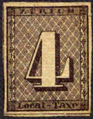
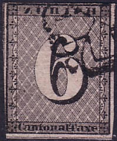
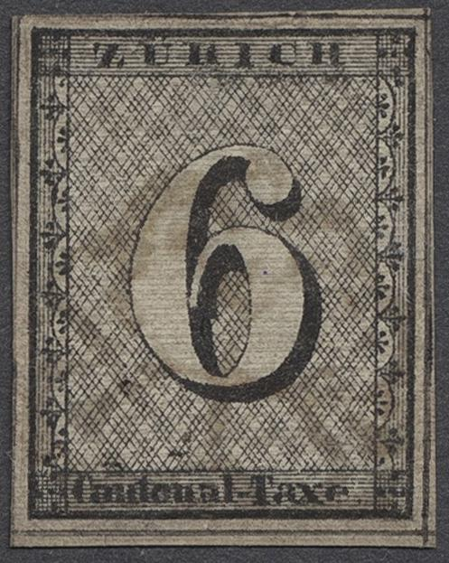
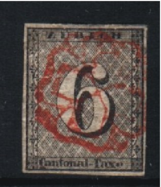
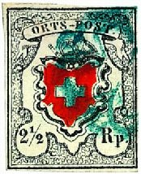

Return To Catalogue - Zurich forgeries, part 1 - Zurich forgeries, part 2 - Basel - Neuchatel - Geneva - Vaud - Winterthur - Switzerland overview
Note: on my website many of the
pictures can not be seen! They are of course present in the
catalogue;
contact me if you want to purchase the catalogue.
Zurich decided to follow the English experiment with the prepayment of postage at the 21st of January 1843. On the 1st of March 1843 stamps were printed in the values 4 and 6 rappen (=cents in german, Zurich is situated in the german speaking part of Switzerland). The 4 r stamps were intended to be used locally and the 6 r could be used in the whole canton.There are 5 different types. Some printing defaults appeared during reproduction. After, the copies were partially corrected. White paper was used for the printing, with red lines in the background (either horizontal or vertical, these red lines were applied just before use). The gum has brown colour. A reprint (1862) on paper without red lines was made before the lithographic stones were destroyed.


4 r black (Local-Taxe) 6 r black (Cantonal-Taxe)
There are 5 types of each stamp. Furthermore the underprint of red lines can be horizontal or vertical.
Value of the stamps |
|||
vc = very common c = common * = not so common ** = uncommon |
*** = very uncommon R = rare RR = very rare RRR = extremely rare |
||
| Value | Unused | Used | Remarks |
| 4 r | RRR | RRR | |
| 6 r | RRR | RRR | |
In the background, there are diagonal black lines, they are found in groups of four. No more than 8 of such groups should be present at any of the sides. If there are, the stamp must be a forgery. The inscription of the 4 r should be 'Local-Taxe'. There must always be a '-' between 'Local' and 'Taxe' in the 4 r stamp. There are NO numbers in any of the four corners. The 5 types of this value (note the position of the background with the oblique lines and the position of the lettering):


Type 4, zoom-in.
Only type 1 has a dot behind the word 'Taxe'.
In the 6 r the end of the tail of the '6' should not join the left hand side of the '6' in the center of the stamp. There are NO numbers in any of the four corners. The inscription of the 6 r should be 'Cantonal-Taxe'. The 5 types of the 6 rp value:

Type 1, zoom-in
Type 2 zoom-in.
Type 3 zoom-in

Type 5 zoom-in


Left: certified genuine proof or 'Esslinger Probedruck' with '18'
and '43' in the lower corners, the first one is cancelled with
the Zurich Rosette cancel (trial cancel)

Other Esslinger proofs
Be careful, these proofs have also been forged. Note, that all stamps with '1' and '8' in the upper corners and '4' and '3' in the lower corners are forgeries, click here for more details.


Reprints
A reprint (1862) on paper without red lines was made before the lithographic stones were destroyed (see images above). If my information is correct, only 120 stamps of the 4 r and 400 stamps of the 6 r were reprinted.
examples:
 

(Genuine, typical cancels)
The cancels of the original stamps is as shown above (a rosette) in black, red, blue or green colour. These cancels were inspired by the cancels of Great Britain (see the book of P.Mirabaud and A.De Reuterskiold; 'Les Timbres-Poste Suisses 1843-1862'). Local letters for the town of Zurich received a red cancel, others received a black cancel. Blue cancels are rare and used after January 1849 (federal cancels). I don't know where the green cancels were used for. I have never seen any blue or green cancel used on a Zurich stamp. According to Mirabaud and Reuterskiold, the blue and green cancels were probably unofficial (used in the postoffice of Stäfa). Also the cancel 'AUSLAG VON ZURICH' in an oval can be found (according to Album Weeds, but I've never seen it on a stamp).
(Some cancels on letters, images obtained from a Honegger
auction)
(The cancel 'AUSLAG VON ZURICH' on a stampless letter)
I have seen a genuine stamp with a forged cancel, example:

(Genuine stamp with forged blue cancel)
The Rosette cancel of Zurich can also be found used on the federal stamps of Switzerland, example:


The Zurich Rosette cancel was not used any more during a short period from the 1st of October 1850 to 17nd of January 1851, when it was replaced with a 'PP' cancel. For unknown reasons the Rosette was reused after this latter date and the 'PP' withdrawn. In August 1851 the Rosette cancel was withdrawn definitively (some exceptional cases are known with use after this date, source: http://www.ghonegger.ch/deutsch/artikelsammlung/d_zhrosetten.asp ).


P.P. cancel and part of a cancel '...RYKON'; (see the book of
P.Mirabaud and A.De Reuterskiold; 'Les Timbres-Poste Suisses
1843-1862')


{kind=link}
{kind=link}